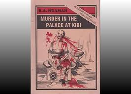
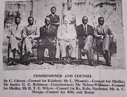
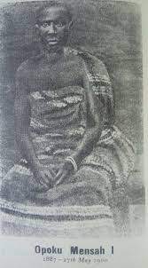
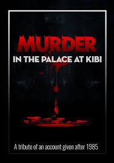
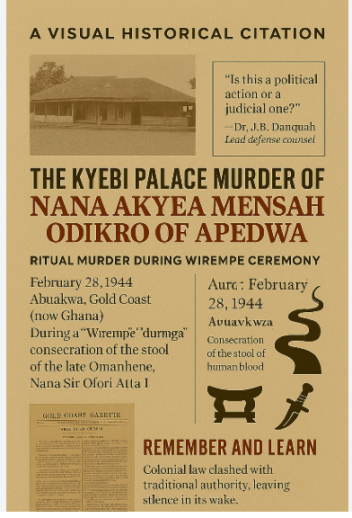

Introduction: A Crime That Shook a Nation
On the evening of October 20, 1944, in the royal palace of Kibi, capital of the Akyem Abuakwa state, Nana Akyea Mensah, the Odikro (sub-chief) of Akyem Apedwa, was assassinated. The murder was not a random act of violence—it was a political assassination that exposed deep rivalries within one of the Gold Coast's most powerful traditional states and revealed the fragile relationship between colonial authority and indigenous power.
The case became a national scandal, a media sensation, and a rallying point for anti-colonial activists. The explosive press coverage, led by H.A. Nuamah's groundbreaking article, forced the case into the national consciousness and set the narrative of high-level conspiracy.

Historical Context: The Ritual Murder Tradition
The following article from an earlier period provides crucial context for understanding the cultural and political tensions surrounding ritual practices in the Akyem Abuakwa state. This account details a notorious ritual murder trial that occurred during the funeral ceremonies of Sir Ofori Atta I, highlighting the Wirempe custom and its violent manifestations.
📰 "A RITUAL MURDER TRIAL" - Contemporary Account
A RITUAL MURDER TRIAL
By A SPECIAL CORRESPONDENT The story of the case, as reported at length in the Press of the colony, is briefly this. A native potentate, the Odikro (or sub-thief) of Apedwa, was attending the funeral obsequies of the well-known and enlightened chief, Sir Ofori Atta, when he suddenly and completely disaPpeared. Five months after- wards his remains were found in the bed of a stream. Eight natives were charged with his murder, and after a trial which lasted 26 days and included the testimony of 75 witnesses, all eight were sentenced to death. They had all pleaded not guilty and have now lodged an appeal against the death sentence. It is known that Sir Ofori Atta, who was a most distinguished and able West African, was at the time of his death devising ways of putting an end to the orgy of ritual murder that had accompanied the decease of all his predecessors. Unhappily, he died too soon, and at his own funeral ceremony an unusually distinguished victim, the Odikro of Apedwa, was sacrificed in his honour.
So great was the feeling in Accra about this case that the jurors were isolated throughout the trial and a guard was put over them. The Crown Counsel told the jury that the dead chief, the Odikro, belonged to a tribe which performs the Wirempe custom, i.e., the consecration with blood of the dead man's eating-stool on the death of a chief. When Sir Ofori Atta died, the Odikro went to his palace to take part in the funeral rites. Two young men went with him, friends he met on the way, and standing in an archway of a court- yard in the palace they saw the Odikro struck down while he was drinking with the eight accused, who were stool-bearers in the funeral ceremony about to take place. The young men were frightened at what they had seen, and ran away and said nothing, but after the Odikro had been missing for some time they reported to the police. The Crown prosecutor told the jury that witnesses would be called who had seen the missing chief lying dead in the stool-room with a knife through his cheeks and blood still flowing from his mouth, and the eight accused standing round him.
One of the witnesses, a stool-carrier who had taken part in the funeral, gave evidence to this effect. The head stool-carrier picked up a bowl from the floor, and it was full of blood. With the blood from the bowl he smeared the stool which had belonged to the late chief. Among other interesting witnesses was a fetish man. "I live at Kibi," he said, "and I am a fetish priest and a mechanical fitter.. .. All the people met and selected me to be the fetish priest about so years ago." He told how one of the accused men came to ht secretly by night some weeks after the disappearance of the
Odikro and said, "I am among those who killed Akyea Mensah' (the Odikro), and his ghost is haunting me all the time and I cannot sleep. Give me some medicine to expel the ghost." The fetish man promised to give him some medicine to drive away the ghost if the man would show him where the body was buried. "I said that if I gave him a medicine I would have to pour the medicine after he had washed with it over the remains of Akyea Mensah to keep his spirit down." He promised to prepare the medicine, and forthwith reported the interview to the police. Later the accused man came for his medicine, which the fetish man gave him, with the instructions that he was to wash in it for seven days and then bring it back. He returned in seven days, and by night took the fetish man to a place in the mausoleum, where he dug in the earth and uncovered some human remains. The fetish man poured the medicine over them and reburied them. Later he took a police corporal to the spot. A second fetish man gave evidence that another of the eight accused
had come to him with a similar story, saying that since the funeral obsequies of Sir Ofori Atta the ghost of the Odikro of Apedwa had been disturbing him and he would give up to £200 for some medicine to drive away the ghost.
Among other witnesses a native corporal told how, after interview- ing the first fetish man, he and other police officials dug in the bed of a stream and there found human remains, and the British Senior Assistant Superintendent of Police described the discovery of the remains. A police photographer stated that he had carefully examined enlarged photographs of the skull found in the stream bed and of the missing chief, and came to the conclusion that they tallied. A Government pathologist confirmed this view.
For the defence, the eight accused denied that they had anything against the murdered chief or any reason why they should do him ill.
They said that soot, white of egg, blood of sheep and drink were used
ID blacken the stool, and they had never heard from their ancestors that human blood was customarily used. One ol them stated that he
had been offered £too by the "white men" if he told the truth about the death of the Odikro, and two other defendants maintained that, as circumcised persons, they were by custom debarred from taking part in the stool ceremony in question. Most of the eight put in elaborate alibis to prove that they were elsewhere at the time of the murder.
The court-room was packed to capacity when Mr. Justice Fuad gave his summing-up, which was not allowed to be reported by the Press, since in a case where feeling ran so high it was feared that the reports might not be fair and balanced. When the jury gave a verdict of " Guilty " a great roar went up from the crowd of over a thousand packed into the court. The youngest of the eight accused, speaking in English, cried out: "I am not guilty. If British justice existed I should never be convicted." The Accra paper, the Daily Echo, put it, "Relatives of the condemned men wept ; others maintained a strong silence ; many, too, thought of Akyea Mensah and hoped that justice had really been done." Thus ended the most sensational trial Accra had seen for many years, and another blow had been struck at the loathsome tradition of ritual murder. That remains true whatever the result of the appeal in this particular case may be.
Significance: This trial, occurring shortly before the 1944 assassination, illustrates the ongoing struggle against ritual murder practices in the Akyem Abuakwa state. Sir Ofori Atta I's efforts to end these customs made him a target, and his death provided an opportunity for traditionalists to revert to old practices. The case also demonstrates the colonial authorities' attempts to suppress these traditions through legal means, setting the stage for the political conflicts that would erupt in the following years.
Modern Reflections: Blood at the Stool
The following article, published in Modern Ghana in 2025, offers contemporary insights into the Kyebi Palace murder, reflecting on its historical significance and calling for greater awareness of this dark chapter in Ghana's past.
📰 "Blood at the Stool: Reclaiming the Memory of the Kyebi Palace Murder" by Atitso Akpalu
Ghana's path to independence is paved with stories of resistance, intellect, and vision. But there are darker chapters too—ones cloaked in ritual, secrecy, and political tension. Among them, the Kyebi Palace murder of 1944 remains one of the most chilling and under-discussed events in Ghanaian history. Its eerie silence in public memory is matched only by the brutal nature of the crime itself—a murder that raised complex questions about tradition, justice, and colonial power.
📜 A Ritual Crossed by Blood
The Wirempe ritual in Akyem Abuakwa was sacred. It was meant to consecrate the stool of a departed Omanhene, invoking ancestral strength with offerings of animal blood, soot, and eggs. But on February 28, 1944, this tradition took a macabre turn.
Nana Akyea Mensah, the Odikro of Apedwa, was allegedly murdered during the ritual—drugged, stabbed through the cheeks to silence him, and dismembered. His blood was reportedly collected to blacken the stool, and his body buried beneath a diverted stream to erase the evidence.
It was no ordinary crime. It was ritualistic, symbolic, and politically explosive.
⚖️ Trial in the Colonial Spotlight
When colonial authorities intervened, the case sparked a high-profile trial in Accra. Those accused included prominent Akyem elders and traditional officeholders:
Asare Apietu, Abontendomhene
Kwesi Pipim and Kwame Kagya, royal drummers
Kweku Amoako-Atta, head of the Native Authority Police
The defence was led by none other than Dr. J.B. Danquah, a nationalist icon and member of the royal family. His legal team included Edward Akufo-Addo (future Chief Justice and President), Sarkodie-Addo, and Nii Armaah Ollenu. The stakes were high—not only for the accused but for the traditional institution itself.
After weeks of testimony and deliberation, the jury returned a unanimous verdict: guilty. Yet for many Ghanaians, questions lingered. Was the trial fair? Was it politically manipulated by colonial interests? Did tradition collide fatally with modern justice?
🧠 Why This Case Still Matters
This murder wasn't just an isolated act—it exposed deep tensions:
Colonial governance vs. indigenous authority
Law vs. ritual
Modern justice vs. traditional silence
In the words of historian Prof. Kwaku Osei, "Kyebi was a microcosm of the Gold Coast—where power, blood, and symbolism collided. We cannot build a future if we forget the shadows of our past."
🔍 The Silence That Followed
Perhaps most striking is how silent Ghana has been about this case. Biographies of Dr. Danquah seldom mention it. Civic education curricula leave it untouched. It's buried—much like the body of Nana Akyea Mensah—beneath streams of national pride and polished history.
But remembering it isn't about shame—it's about learning.
📣 Call to Action: Let History Speak Again
If Ghana is serious about building an engaged and informed citizenry, civic education must revisit uncomfortable truths. The Kyebi Palace murder should be taught—not to sensationalize, but to illuminate:
The dangers of unchecked power
The need for transparency in governance
The importance of honoring tradition ethically
Let us open the archives. Let us invite discussion. Let us teach—not just the victories of Ghana's independence, but the moral and political dilemmas along the way.
As we reflect on national identity and democracy, this story is not a footnote—it's a chapter waiting to be read.
🎬 Blood and Silence: The Forgotten Justice of Kyebi Palace
Set against the haunting backdrop of colonial Gold Coast, this reimagined historical drama invites the international film industry to unravel one of Africa's most cryptic and powerful murder trials. The 1944 ritual killing of Nana Akyea Mensah, Odikro of Apedwa, during the sacred Wirempe ceremony at Kyebi Palace, offers gripping cinematic potential—with royal tension, ancestral tradition, and political betrayal interwoven into every frame. Intriguingly, the murdered Odikro bore an uncanny resemblance to a prominent Ghanaian lawyer and former Member of Parliament, fueling whispers of legacy and reincarnation that could be explored in dramatic flashbacks. With courtroom clashes led by the formidable Dr. J.B. Danquah and the subtle entanglements of colonial powers like Churchill's Britain, this story cries out for an emotionally charged, globally resonant film that confronts justice, memory, and the cost of silence.
Source: Modern Ghana - Blood at the Stool: Reclaiming the Memory of the Kyebi Palace Murder (Published July 2, 2025)
Akyem Apedwa: The Home of the Victim
To understand the significance of Nana Akyea Mensah’s position and the political weight of his murder, one must understand Akyem Apedwa—his home town and traditional area.
📍 Location & Significance
- Region: Eastern Region of Ghana.
- Strategic Position: Situated directly on the historic Accra-Kumasi Highway (N6), making it a crucial transit town for trade, transport, and communication between the coast and the Ashanti hinterland.
- Traditional State: A key town within the Akyem Abuakwa Traditional Area, one of the three main Akyem states (along with Akyem Kotoku and Akyem Bosome).
- Capital: Kibi (also spelled Kyebi), the seat of the Okyenhene (Paramount Chief), is located about 15 km northeast.
👑 The Stool Land & Political Power
- Stool Land: Akyem Apedwa controls significant stool land—territory held in trust by the chief (the "stool" symbolizes office) for the community. Stool lands are a source of authority, revenue, and cultural identity.
- Economic Base: The land is rich in natural resources, including gold and cocoa. Control over these resources has historically been a source of both wealth and conflict.
- Political Role: The Odikro of Akyem Apedwa is a senior divisional chief within the Akyem Abuakwa hierarchy. He holds a seat on the Akyem Abuakwa State Council, the traditional parliament that advises the Okyenhene. This gave Nana Akyea Mensah a direct voice in the kingdom's highest affairs.
========================
Kumasi
↑ N
|
|--- Accra-Kumasi Rd --->
|
| [Akyem Apedwa]
| |
| (15 km)
| |
| [KIBI - Palace]
|
↓
Accra
========================
The murder happened in Kibi, but the victim's power base was in Apedwa.
Why This Matters to the Murder: Akyea Mensah was not a minor figure. As Odikro of a strategically and economically important town on a major highway, his opposition to Okyenhene Sir Ofori Atta I carried substantial weight. His murder removed a powerful critic from the State Council and sent a chilling message to other dissenters within the Akyem Abuakwa kingdom. The control over Apedwa's stool land and resources was also likely a subtext in the conflict.
Breaking News: H.A. Nuamah's Revelations (Oct 27, 1944)
Just one week after the murder, journalist H.A. Nuamah published a detailed investigative report in the Gold Coast Observer. This article was the first to publicly allege a conspiracy beyond the trigger-man, and its key claims became central to the public’s understanding of the case.
📰 Key Claims from Nuamah's Article:
- Name of the Assassin: Identified Yaw Badu as the palace clerk who carried out the shooting.
- Location & Setting: Confirmed the murder took place inside the Okyenhene’s palace, implying palace insiders were involved.
- Political Motive: Explicitly linked the murder to the bitter chieftaincy dispute between Akyea Mensah and the Okyenhene, Sir Ofori Atta I.
- Conspiracy Allegation: Strongly suggested Yaw Badu was a “tool” acting on orders from powerful figures in the royal household.
- Immediate Cover-up Suspicions: Noted the unusual movements and silence from palace authorities immediately after the crime.
- Public Outcry: Reported the widespread shock and anger in Kibi and surrounding towns, with crowds gathering demanding justice.
Impact: Nuamah’s reporting broke the official silence and framed the murder as a political crime. It forced the colonial police to accelerate their investigation and put the Ofori Atta dynasty on the defensive. This article is considered a landmark in Gold Coast investigative journalism.
The Victim: Nana Akyea Mensah

A prominent and outspoken sub-chief, Akyea Mensah was a known critic of the reigning Okyenhene (Paramount Chief), Nana Sir Ofori Atta I. He was a key supporter of Nana Ofori Atta II (Aaron Ofori Atta) as the rightful heir to the throne. His opposition made him powerful enemies within the royal court. Nuamah's article highlighted his role as a "thorn in the flesh" of the palace establishment.
Roots in Apedwa: His authority was firmly grounded in his leadership of Akyem Apedwa. The resources and strategic importance of his stool land gave him a degree of independence and leverage that made him a particularly threatening opponent to the central authority in Kibi.
The Crime Scene & Assassination
The murder took place inside the Okyenhene's Palace in Kibi—the very seat of traditional power. This brazen act indicated that the killers had inside access and protection.
- Date & Time: Evening of October 20, 1944.
- Method: Akyea Mensah was shot. The assassin was Yaw Badu, a court clerk employed in the palace, as first reported by Nuamah.
- Immediate Aftermath: The murder caused immediate uproar. Yaw Badu was quickly apprehended, but rumors spread that he was merely a tool for more powerful figures.
- Nuamah's Reporting: Described the scene as one of "panic and secrecy" within the palace, with attempts to control the narrative and isolate witnesses.

The Accused: From Trigger Men to Suspects in High Places
Formally Tried and Convicted:
| Name | Role | Charge & Outcome |
|---|---|---|
| Yaw Badu | Court clerk in the Okyenhene's palace; the direct assassin (first named by Nuamah). | Found guilty of murder. Hanged in 1945. |
| Kwasi Amoako | Alleged conspirator and accomplice. | Tried and convicted as an accomplice to murder. |
| Kwabena Kesse | Alleged conspirator and accomplice. | Tried and convicted as an accomplice to murder. |
Widely Suspected but Never Charged:
Public opinion, fueled by Nuamah's article and subsequent press coverage, pointed to higher-level orchestrators:
- Senior palace officials loyal to Okyenhene Nana Sir Ofori Atta I.
- Faction within the Akyem Abuakwa royal family opposed to Akyea Mensah's political alignment.
- The colonial judiciary's failure to pursue these figures was seen as a cover-up to protect the colonial-collaborator chief, a point later hammered by Nkrumah’s media.
The Trial & Legal Drama
The trial was a major public spectacle, held in the Gold Coast Supreme Court. The legal teams featured some of the colony's most famous future leaders. The prosecution relied heavily on the facts first exposed by the press.
J.B. Danquah (lawyer, historian, and brother of Okyenhene Sir Ofori Atta I), E.O. Asafu-Adjaye, and C.H. Chapman mounted a vigorous defense. Danquah's involvement was particularly notable given his family ties to the palace.
Led by G.B.H. Patrick (Senior Crown Prosecutor), the state argued premeditated murder. Evidence included eyewitness accounts from the palace and the murder weapon.
Verdict: Despite the defense's efforts, the evidence against Yaw Badu was overwhelming. He and his accomplices were convicted. The trial, however, failed to address the central question raised by Nuamah and the public: Who gave the order?

Political Earthquake & Nkrumah's Role
The murder became a central reference point in the growing anti-colonial movement. Kwame Nkrumah and his media apparatus later weaponized the case, but they built upon the foundation of public anger first ignited by journalists like H.A. Nuamah.
Kwame Nkrumah's Exploitation of the Case:
- Journalistic Weapon: Through his newspaper, the Accra Evening News, Nkrumah repeatedly referenced the murder to attack the "old guard"—the traditional chiefs and the UGCC elite (including his rival J.B. Danquah) as corrupt collaborators.
- Political Symbolism: He framed it as the ultimate example of injustice: small men hanged while the powerful instigators went free. This narrative fueled his populist campaign for self-government.
- Undermining Rivals: By constantly reminding the public of Danquah's role as defense counsel, Nkrumah linked his rival to the scandal-tainted aristocracy.
- Building on Earlier Journalism: Nkrumah’s rhetoric directly echoed and amplified the suspicions first reported in detail by H.A. Nuamah in 1944.
Historical Legacy & Significance
- Press Freedom & Power: H.A. Nuamah’s article demonstrated the growing power of the independent press in the Gold Coast to challenge both traditional and colonial authority.
- Chieftaincy & Politics: The murder laid bare how colonial "indirect rule" could intensify internal chiefly conflicts to deadly levels. The struggle between Kibi (central authority) and Apedwa (powerful sub-chief) is a classic example.
- Path to Independence: The scandal weakened the moral authority of the colonial-aligned chiefly establishment, creating space for anti-colonial radicals like Nkrumah to gain ground.
- Unresolved Mystery: To this day, the full story of who ordered the assassination remains officially unanswered, a subject of historical debate and local memory in Akyem Abuakwa. Nuamah’s early reporting remains a primary source for that investigation.

Further Research & Archival Resources
For scholars and the curious, here are key sources:
- Primary Source - The Breaking News:
- “Murder in the Palace at Kibi” by H.A. Nuamah. Gold Coast Observer, Vol. 14, No. 43, Friday, October 27, 1944. (Held at the British Library Newspaper Archive, Colindale; microfilm copies at University of Ghana, Legon).
- National Archives of Ghana (Accra): Supreme Court criminal case records (Case No. 89/1944), Colonial Secretary's files.
- British National Archives (Kew): Colonial Office correspondence series CO 96/... referencing "Kibi murder."
- Contemporary Newspapers (1944-1948): The Gold Coast Independent, Ashanti Pioneer, Daily Graphic, and Nkrumah's Accra Evening News.
- Secondary Sources:
- Rathbone, Richard. Murder and Politics in Colonial Ghana. (Yale University Press, 1993).
- Apter, David E. Ghana in Transition. (Princeton University Press, 1972).
- Articles on the Ofori Atta dynasty and Akyem Abuakwa history in Transactions of the Historical Society of Ghana.
- Addo-Fening, R. Akyem Abuakwa 1700-1943: From Ofori Panin to Sir Ofori Atta. (Trondheim, 1997).
Note on H.A. Nuamah: H.A. Nuamah was a prominent journalist and editor for the Gold Coast Observer. His courageous reporting on the Kibi murder set a precedent for investigative journalism in the colonial era. He later became involved in politics and was a member of the Legislative Council in the 1950s.